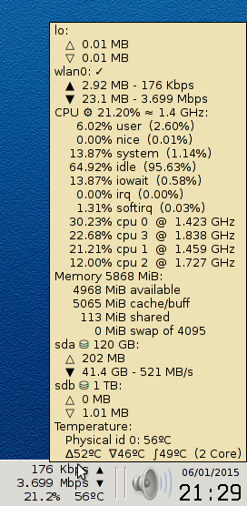

Features
- Low resources usage (about 0.26% CPU in a i5-2520M machine): fully written
in C++
- Text mode: only precise data, no rough fancy graphs
- Tiny size with the essential data but...
- ... hugely extended information in the tooltip (see the picture) which still can be on top of every window
while you type (of course provided the mouse remains over it)
- Smart: speed units change but are cleverly formatted. For example, it may commute
965 Kbps ↔ 1.100 Mbps, while other monitors swap
965 Kbps ↔ 1.1 Mbps (requiring your brain to track the label to perceive the
speed direction, with the consequent delay potentially causing the data to change again before you catch it).
Installation
- Download
xfce-hkmon.cpp
and compile it (you only need gcc 4.6+ or clang installed):
g++ -std=c++0x -O3 -lrt xfce-hkmon.cpp -o xfce-hkmon
- Place the executable somewhere (e.g.
/usr/local/bin)
- Make sure you have the XFCE Generic Monitor Applet installed (the package is called
xfce4-genmon-plugin in some distros).
- Add a new XFCE Generic Monitor Applet with these settings: no label,
one second refresh period, Bitstream Vera Sans Mono font (recommended a monospace font) and the
following command:
/usr/local/bin/xfce-hkmon NET CPU TEMP IO RAM
Notes
- The network interface shown in the panel is automatically selected (highest accumulated traffic). If you prefer
another one, simply add its name (
eth0, ppp0, etc) to the command line (NET
could be omitted). The tooltip shows all the network interfaces with at least one byte transferred, and a mark signaling
which one is being reported in the panel. By default the speed is shown in bits per second (use NET8
to select bytes).
- Likewise, only physical disks with data transferred since boot are reported.
- If a device (network or disk) is moving a single byte of data, the related △ or ▽ arrow will turn
black (meanwhile, the IO or bandwidth value reported may be shown as 0 under too little data transferred).
- The tooltip shows a CPU usage resume (all cores) and a brief breakdown by core. Values within parentheses are
the accumulated usage since boot. The speed summary displayed at the top is weighted by real usage (thus it can run
from a few MHz all the way to as many GHz as the number of cores available multiplied by their max clock).
- If a virtual machine is running, guest or guest nice CPU values will be reported showing its
expenditure (on the other hand, if this monitor's computer runs inside a virtual machine, a steal value
could be reported).
- The temperature shown in the panel area is the highest read among all cores and sockets (if there are several
cores or sockets, the tooltip groups them reporting the max/min/avg instead)
- The command line arguments mostly select the tooltip verbosity (RAM will be shown in the panel in place of the
temperature when omitted, though). Old XFCE versions may not show the tooltip contents (only the application binary
path) if too much data is on it.
- The application writes temporary data in shared memory (SSD friendly) usually in
/run/user/<PID> to store its previous state (since it is periodically executed). The binary will
be cached by Linux, thus there is little performance penalty on this setup. The test machine was at 0.60% CPU while
idle with no monitor, 0.86% CPU with the monitor running and 1.17% CPU with the tooltip open (due to Xorg activity,
because the monitor always generates the tooltip, even while hidden).
- Of course, a true XFCE applet would also be nice... hoping that somebody forks this project!